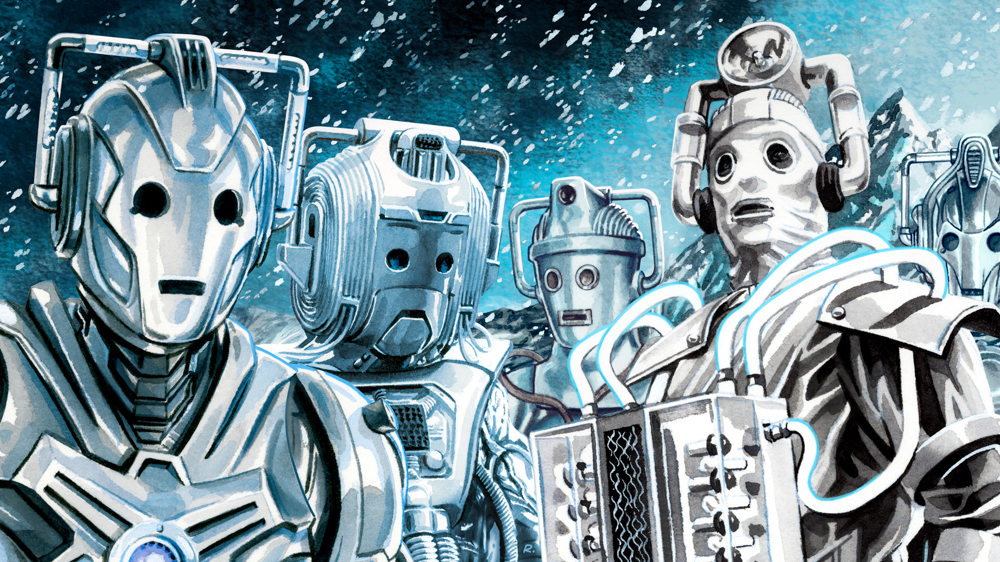
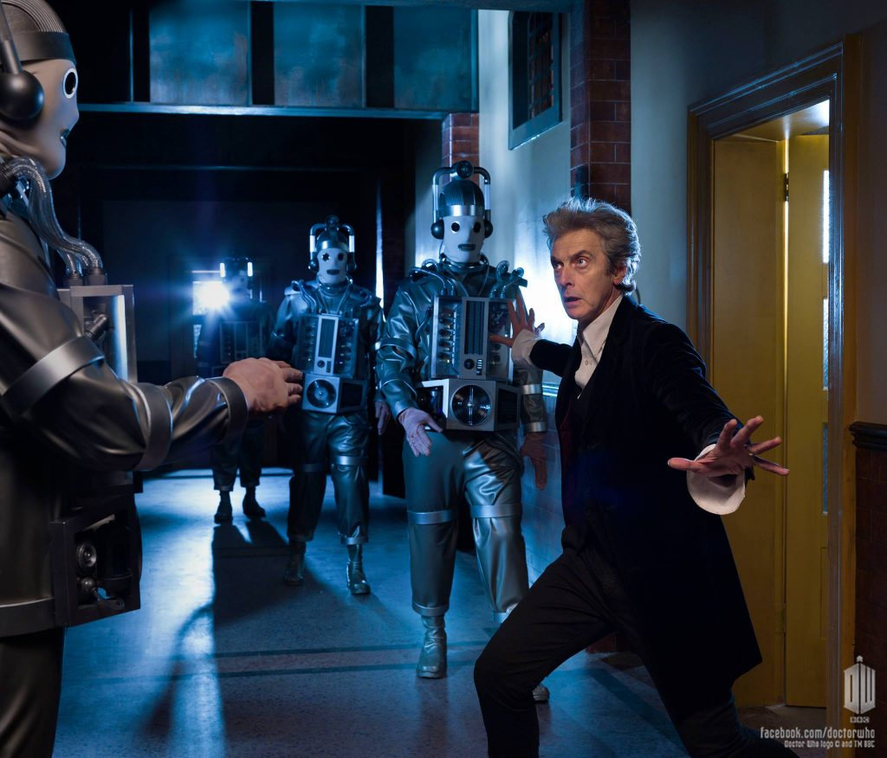
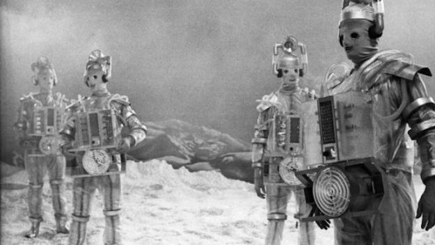

Os Cybermen

Primeira aparição em 1966
Cybermen são uma raça cibernética de humanóides robôs . Eles variaram muito em design, com diferentes facções durante todo o tempo e espaço . Os dois grupos principais, a partir da qual todas as outras versões conhecidas derivam-se, foram os Cybermen Mondasians , que se originou no planeta Mondas - Terra do planeta gêmeo - e os Cybermen criado por Cybus Industries , que se originou na Terra um universo alternativo conhecido pelo Doctor como de Pete's World . Apesar das diferentes origens, havia semelhanças entre os dois grupos de Cybermen, e havia grupos que partilham as características de ambos. Para a maior parte, eles não tinham a individualidade ou nomes. Cybermen não tem emoções e os viam como uma fraqueza. Eles freqüentemente tentam fisicamente e mentalmente transformar seres humanos e outros humanoides em Cybermen, através de um processo chamado de " cyber-conversão " ou " Upgrade ".

Os Cybermen de Mondas
Estes Cybermen eram originalmente uma espécie inteiramente orgânicos de humanóides que se originaram no ex-planeta gêmeo da terra , Mondas. Para sobreviver, os nativos desse mundo adaptado por transformar-se em ciborgues. (TV: The Tenth Planet) Eventualmente, todos os Mondasians sofreram cyber-conversão.(ÁUDIO : Spare Parts) Muitos deles deixaram Mondas e, finalmente, desenvolvido em grupos separados, sem ligação entre si.

(World Enogh and time e The Doctor Falls)
E depois de 50 anos os Cybermen Mondasianos tiveram seu merecido retorno na season finale da decima temporada

Arco: The Tenth Planet (originalmente exibido em 1966)